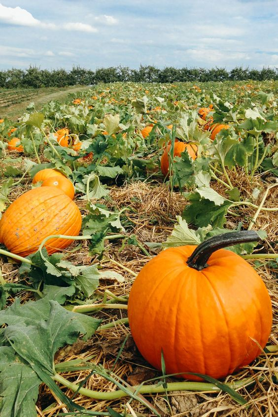

You’ve figured out a place to stay (maybe two or three or all of them),
now what to do during your stay to make it memorable? There is something
for everyone! Check out the most popular activities throughout Hyrule below.
Mysterious Forest Exploration
Feeling brave? Try exploring in our famous mysterious forest.
To this day, no one has been able to find their way through the forest.
No need to worry about getting lost, the forest itself will take you to
the pictured entrance.
Pumpkin Patch Visit

Kakariko is famous for their crops. One of them being the Fortified
Pumpkins grown by the Sheikah farmer Olkin. Come on down to Kakariko to
pick your own pumpkin to eat, carve, or take pictures with!
Shield Surfing
The calamity left tons of unused shields. Selmie, of Selmie’s Spot,
popularized this pastime among Hylians. There are even competitions for
who is the best shield surfer and who performs the best tricks. Try our
introductory course!
Archery Practice
The Rito are famous for their archery abilities. It is no surprise that
they have an archery range available to teach beginners and for others
to hone their skills. Come test your aim!
Paragliding
Seeking some thrilling adventures? Go outside of your comfort zone by
paragliding! The landscape around the Great Plateau is perfect for
learning to paraglide. Feel weightless in this breathtaking activity.
Hot Spring Relaxation
Want to relax instead? Try swimming in the hot springs near Goron City
for some truly rejuvenating time. The naturally hot earth from Death
Mountain keeps our hot springs at the perfect temperature.
Blood Moon Viewing
View our famous Blood Moon event from amazing places. This event occurs
every so often and we have scouted out the best historic, breathtaking,
relaxing viewing sites for your pleasure. Consult your accommodation
package for your area specific site.
Truffle Hunting
These lavish treats can be found all over Hyrule. Want to have better
luck finding them? Ask us for a Truffle Hunting experience! We have
trained dogs that will join us on our trip.
Hot Rock Nap
This new treatment is a Goron special. There are several different ways
to ask for a hot rock treatment, but the most famous is the hot rock bed
featured at the Rollin’ Inn! Ask Goron local Volcon for more information.